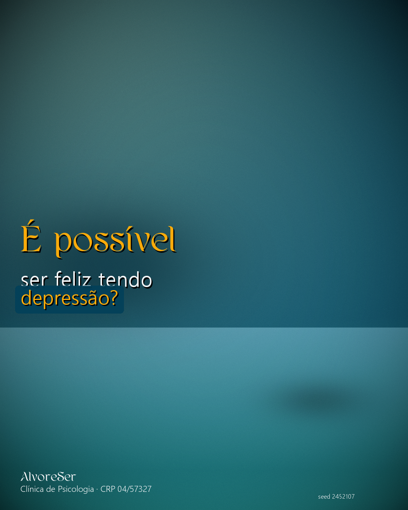
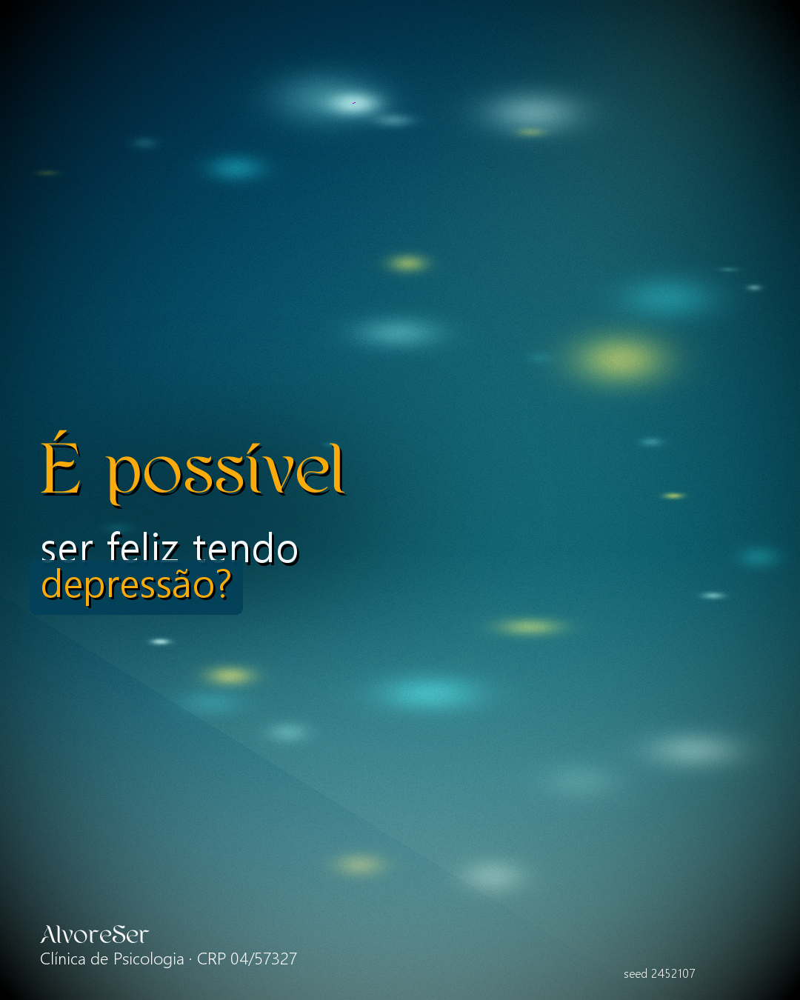

✅ Resultado REAL do teste — Cards gerados localmente
Tema:
*É possível · :ser feliz tendo · -depressão?
| Seed: 2452107 | Tempo total de geração:
13,67s
(sem IA externa, sem rede nenhuma)
🏆 Showcase (Estúdio Editorial)

Parede + Piso curvo
Key-light quente
Fill-light sage
Reflexão piso
Sombra projetada
+ tratamento: vinheta 18% · grão 0.6 · nitidez · contraste 1.04
🎬 Cinematic (Cena cinematográfica)

Bokeh anamórfico ~30
Feixe luz volumétrico
Névoa baixa
Color grade teal/laranja
S-curve contraste
+ tratamento: vinheta 30% · grão filme 1.0 · nitidez · sat 0.94